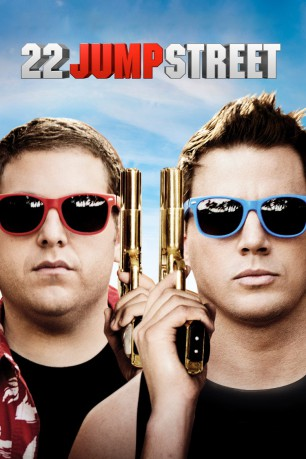
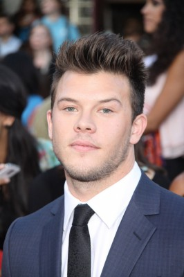
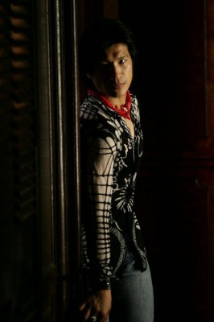
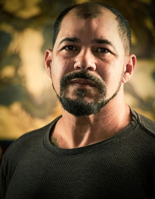

#1986 22 Jump Street
 
 IMDB-Wertung: 7.0 / 10
IMDB-Wertung: 7.0 / 10  Metascore: 71
Metascore: 71 
Nachdem die Neu-Polizisten Schmidt und Jenko ihren ersten Fall erfolgreich lösen konnten, sollen sie erneut als verdeckte Ermittler arbeiten. Dieses Mal wird keine Highschool infiltriert, sondern ein örtliches College. Es kommt, wie es kommen muss: Schnell sind Schmidt und Jenko von ihrer eigentlichen Arbeit abgelenkt und verlieren sich in den Verlockungen des Studentenlebens. Jenko findet Anschluss im Football-Team, während Schmidt sich in Kreisen der gehobenen Kunst zu bewegen beginnt. Diese Einflüsse lassen die beiden Cops allerdings auch an ihrer Partnerschaft zweifeln. Gelingt es den beiden dennoch, sich zusammenzuraufen, ihren Fall zu lösen und endlich erwachsen zu werden? Oder bleibt ihre Freundschaft zwischen den Partys und Schießereien auf der Strecke?
Jahr: 2014
Dauer: 112 Minuten
FSK: 12
Land: USA Studio: Columbia PicturesTonspuren: DTS - ,
Untertitel: Deutsch,
Auflösung: 1080p (1920x800) Größe: 7598 MB
Genre: Action, Komödie, Krimi
Regisseur: Phil Lord, Christopher Miller
Drehbuch: Michael Bacall, Oren Uziel, Rodney Rothman, Michael Bacall, Jonah Hill
Soundtrack: Mark Mothersbaugh
Darsteller:
 Jonah Hill als Schmidt
Jonah Hill als Schmidt Channing Tatum als Jenko
Channing Tatum als Jenko Peter Stormare als The Ghost
Peter Stormare als The Ghost Wyatt Russell als Zook
Wyatt Russell als Zook- Amber Stevens West als Maya
 Jillian Bell als Mercedes
Jillian Bell als Mercedes Ice Cube als Captain Dickson
Ice Cube als Captain Dickson- The Lucas Brothers als Keith & Kenny Yang
 Nick Offerman als Deputy Chief Hardy
Nick Offerman als Deputy Chief Hardy-  Jimmy Tatro als Rooster
 Caroline Aaron als Annie Schmidt
Caroline Aaron als Annie Schmidt- Craig Roberts als Spencer
 Marc Evan Jackson als Dr. Murphy
Marc Evan Jackson als Dr. Murphy Joe Chrest als David Schmidt
Joe Chrest als David Schmidt Eddie J. Fernandez als Scarface
Eddie J. Fernandez als Scarface- Johnny Pemberton als Delroy
- Stanley Wong als Roman
- Dax Flame als Zack
- Tyler Forrest als Stoned-Looking Kid
- John Bostic als University of Internet Professor
- Richard Grieco als Booker
-  Dustin Nguyen als Vietnamese Jesus
- Ian Hoch als Improv Student
- Kate Adair als Improv Student
- Katrina Despain als Girl in Bathroom
 Oscar Gale als Tattoo Artist
Oscar Gale als Tattoo Artist- Janeline Hayes als Slam Poet
- Toby Nichols als Boy at the Pond
 Toby Holguin als Mustached Goon
Toby Holguin als Mustached Goon-  Eddie Perez als Library Goon
- Mickey Facchinello als Drunk Beach Fight Girl
- Sam Schweikert als Spring Break Student
- Rachel Acuna als Parent , uncredited
- Vanessa Amaya als Sorority Girl , uncredited
 John L. Armijo als Precinct Cop , uncredited
John L. Armijo als Precinct Cop , uncredited- H. Jon Benjamin als Mcs Coach , uncredited
- Libby Blanton als Beach Babe , uncredited
 Tom Bui als Detective , uncredited
Tom Bui als Detective , uncredited- Gustavo Cardozo als Student , uncredited
- Hannah Chenevert als Sorority Girl , uncredited
- Rebecca Collins als College Student , uncredited
- Blas Diaz als Local Mexican , uncredited
 Anna Faris als Anna, 30 Jump Street: Flight Academy , uncredited
Anna Faris als Anna, 30 Jump Street: Flight Academy , uncredited- Guillo Fornaris als Spring Breaker Arrested , uncredited
 Dave Franco als Eric Molson , uncredited
Dave Franco als Eric Molson , uncredited- Julián Garnik als Spring Breaker , uncredited
- Juan Gaspard als Fan , uncredited
 Bill Hader als Culinary School Villain , uncredited
Bill Hader als Culinary School Villain , uncredited Christopher Heskey als Inmate #1 , uncredited
Christopher Heskey als Inmate #1 , uncredited- Adam Karchmer als End Credits Boy , uncredited
Datei: X:\2-Dilogie(G-M)\Jump Street\22 Jump Street (2014, FSK12, 1920x800).mkv seit 15.09.2015
Festplatte: HD Collection-2(A-Z)-3(A-M)
 Alle Filme aus Gruppe '2-Dilogie(G-M)\Jump Street'
Alle Filme aus Gruppe '2-Dilogie(G-M)\Jump Street'